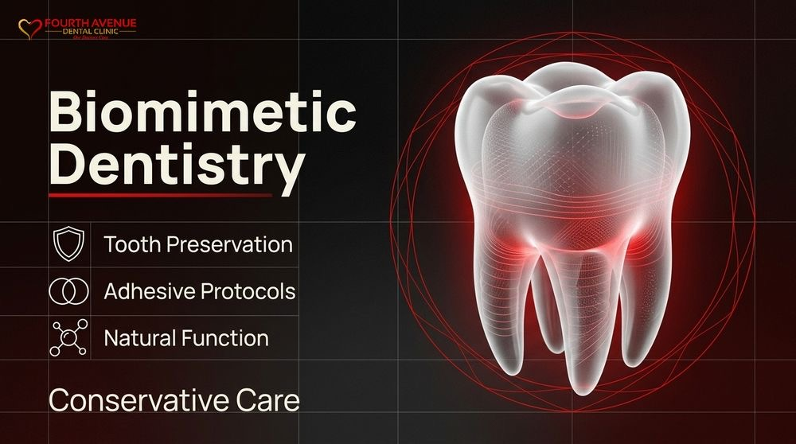

How We Use Biomimetic Dentistry to Protect Natural Teeth
Biomimetic Dentistry · Oral Health · Restorative Dentistry · Tooth Preservation

Traditional restorative dentistry has long relied on aggressive mechanical retention to place crowns, large fillings, and bridges. For decades, standard care models dictated cutting away substantial amounts of intact tooth enamel and dentin simply to make room for artificial restoration materials. This subtractive process permanently weakens the underlying biological foundation, increasing the long-term risk of structural fatigue, pulpal nerve irritation, and eventual root canal therapy or tooth extraction. When natural tooth structure is removed, it cannot regenerate. Repeated replacements over a lifetime progressively diminish the remaining biological asset, creating escalating clinical challenges and unnecessary discomfort for patients.
Our practice approaches oral health through a scientifically rigorous, tissue-preserving methodology known as biomimetic dentistry. Rather than sacrificing healthy anatomy for the sake of mechanical convenience, this clinical standard reproduces the physical mechanics and biological attributes of natural teeth. By understanding how enamel, dentin, and the complex dentinoenamel junction work together to absorb everyday masticatory stresses, we apply advanced adhesive protocols that bond directly to intact biological substrates. This paradigm preserves the vital pulp, reinforces structural integrity, and seals out harmful bacterial microleakage.
Patients who seek long-term stability and preventative healthcare deserve restorative solutions that respect natural biology. Our clinical philosophy focuses on tooth preservation by stopping the restorative death spiral before it begins. By applying conservative dental restorations crafted from modern composite resins, ceramics, and advanced hybridization techniques, we rebuild damaged teeth so they function, flex, and distribute forces identically to healthy, natural dentition.
The Core Principles of Biomimetic Dentistry
Biomimetic dentistry is rooted in the detailed study of natural dental biomechanics. Natural teeth possess an extraordinary balance of hardness and elasticity. Outer enamel provides an extremely rigid, wear-resistant shield against daily friction, while underlying dentin functions as a resilient, stress-absorbing cushion. Traditional dental treatments frequently disrupt this natural balance by introducing overly stiff materials like conventional porcelain fused to metal, which transfer destructive forces directly into the root structure.
Our clinical approach begins with structural preservation, removing only degraded or infected tissue while leaving every fraction of healthy enamel and dentin untouched. By avoiding extensive clearance preparations required for full-coverage crowns, we maintain the natural geometric strength of the tooth. Preserving peripheral enamel rims ensures that the tooth retains its natural perimeter strength, preventing microfractures that lead to catastrophic structural failure over time.
Advanced adhesive technology forms the operational core of our biomimetic protocols. Rather than relying on friction and mechanical locks, we utilize gold-standard adhesive systems that establish high-strength micro-tensile bonds to dentin and enamel. These bonds distribute occlusal stresses evenly throughout the tooth structure rather than focusing mechanical loads on isolated margins, replicating the natural distribution of biting forces.
A critical element of our biomimetic standard is immediate dentin sealing. By sealing exposed dentin tubules with high-performance bonding agents immediately after cleaning decay, we eliminate post-operative tooth sensitivity, prevent pulpal inflammation, and prevent bacterial colonization beneath restorations. This protective step preserves nerve vitality and drastically reduces the incidence of unexpected root canal treatments.
Advancing Tooth Preservation Through Minimally Invasive Techniques
Minimally invasive dentistry is not simply an aspiration; it is an exacting operational discipline supported by specialized instrumentation and microscopic precision. Our diagnostic and operative workflows incorporate high-magnification optical loupes and surgical microscopes. This optical precision enables us to distinguish precisely between infected outer dentin that must be carefully excised and affected inner dentin that can be remineralized and conserved.
Air abrasion technology replaces aggressive high-speed rotary instruments during vital stages of cavity preparation. By projecting fine streams of specialized aluminum oxide particles, we gently clean the substrate, remove decayed tissue, and create an ideal micro-textured surface for adhesive bonding. This technique avoids the micro-fracturing and intense thermal friction frequently generated by traditional high-speed dental drills, keeping pulpal tissues calm and viable.
To support systematic tooth preservation, we structure our operative preparations around specific conservative boundaries:
- Selective caries removal protocols that protect the integrity of the dental pulp and maintain vascular supply.
- Preservation of marginal ridges, cuspal inclines, and natural tooth architecture to maintain flexural strength.
- Elimination of unnecessary retentive undercuts, dovetails, and deep axial reduction steps.
- Microscopic surface conditioning to maximize adhesive surface area without removing supportive enamel walls.
By keeping restorative preparations strictly confined to damaged zones, we protect the structural integrity of the natural crown. Maintaining maximum natural tooth bulk ensures that future treatments, if ever required, remain simple, superficial, and easily manageable.
Engineering Conservative Dental Restorations for Long-Term Durability
When teeth require reconstruction due to extensive structural damage or decay, conservative dental restorations offer a superior alternative to destructive full crowns. We design precision inlays, onlays, and vonlays that restore missing anatomy while leaving existing sound walls intact. These restorations bond directly to the remaining tooth matrix, effectively functioning as artificial enamel that mirrors the natural mechanical modulus of healthy teeth.
Traditional crown preparations remove between sixty and seventy-five percent of coronal tooth volume, permanently sacrificing valuable peripheral tissue. In contrast, our conservative onlay designs preserve up to eighty-five percent of existing healthy tooth structure. This dramatic conservation of tissue prevents pulpal trauma and maintains biological stability throughout years of heavy mastication.
Material selection is critical in creating biomimetic restorations that behave like natural dentition. We utilize advanced lithium disilicate ceramics and fiber-reinforced composite systems selected specifically for their modulus of elasticity, thermal expansion properties, and wear resistance. These modern biomimetic materials flex under heavy bite forces at rates comparable to natural dentin, preventing the stress concentrations that cause tooth fractures beneath rigid metal restorations.
The integration of stress-reducing composite placement protocols prevents shrinkage stress during curing. By placing restorative composite layers in controlled, fractional increments and incorporating structural ribbon fibers across high-stress zones, we eliminate internal adhesive gaps. This careful layering prevents microleakage, wards off recurrent decay along internal interfaces, and ensures consistent structural cohesion.
Halting the Restorative Cycle and Preventing Nerve Complications
The traditional restorative trajectory is well-documented in clinical dental literature. A small amalgam or composite filling fails, leading to a larger filling. Eventual recurrent decay or structural cracking prompts placement of a full crown. The aggressive reduction needed for a crown frequently traumatizes the underlying nerve, requiring endodontic root canal therapy. Over time, an endodontically treated tooth becomes brittle, leading to vertical root fracture and eventual tooth loss. We work to break this destructive cycle entirely.
Biomimetic dentistry prioritizes pulpal health above mechanical expediency. The dental pulp contains vital blood vessels, lymphatic drainage, and nervous tissue that supply nutrients, hydrate dentin, and provide sensory feedback against excessive biting pressure. Protecting the health of this inner tissue keeps the tooth flexible, resilient, and responsive to normal oral environments.
Through direct resin hybridization and bioactive base liners, we actively facilitate secondary dentin formation while protecting exposed pulpal zones. By sealing the margins hermetically against bacterial enzymes and oral fluids, our biomimetic protocols prevent the silent pulpal necrosis that often develops beneath leaking conventional crowns and large silver fillings.
Patients who receive biomimetic interventions experience significantly lower rates of unexpected pulpitis and avoid secondary surgical interventions. Maintaining structural vitality not only preserves the physical tooth inside the dental arch, it also eliminates unnecessary discomfort and expensive treatments, providing true stability across a lifetime of oral function.
Clinical Benefits of Conservative Approaches Over Traditional Full Crowns
Evaluating long-term outcomes reveals clear clinical differences between conservative biomimetic restorations and conventional dental crowns. While traditional crowns are designed to lock onto a ground-down tooth via rigid mechanical resistance, biomimetic restorations rely on advanced molecular adhesion. This shifts the physical load away from vulnerable margins, establishing an integrated biological unit.
The differences between these two methodologies can be observed across several critical clinical metrics:
- Tissue Preservation: Conservative restorations retain the maximum volume of natural enamel and dentin, whereas traditional crown preparations systematically grind away healthy outer tooth structures.
- Marginal Integrity: Biomimetic adhesive bonds create a seamless, hermetic seal against microleakage, whereas traditional luting cements wash out over time, leading to secondary subsurface decay.
- Pulpal Vitality: Minimally invasive preparation maintains ample protective dentin over the nerve, greatly lowering the incidence of post-treatment root canal therapy.
- Repairability: If a biomimetically bonded restoration suffers wear or chip damage from excessive stress, it can be repaired additively with composite bonding without replacing the entire restoration. Traditional crowns, by contrast, require complete removal and replacement if margins fail.
- Stress Dissipation: Biomimetic materials absorb, distribute, and release heavy occlusal forces evenly, protecting the natural root from fracturing under intense masticatory stress.
By moving beyond outdated subtractive dental methods, we provide treatment solutions that actively preserve your oral anatomy. This conservation-focused approach safeguards your natural teeth, protects your long-term health, and ensures exceptional aesthetic and structural performance.
Planning Your Personalized Tooth Preservation Strategy
Achieving optimal oral health requires a proactive, scientifically advanced approach that prioritizes the conservation of your natural biology. Our dedicated team evaluates every tooth through comprehensive clinical analysis, digital imaging, and high-magnification diagnostics to determine the exact degree of intervention needed. We focus on identifying structural fatigue, microcracks, and failing restorations early, allowing us to implement conservative restorations before extensive tissue loss occurs.
Protecting your smile begins with thoughtful, individualized care tailored to preserve your natural dental anatomy. If you are experiencing discomfort from existing fillings, seeking an alternative to aggressive dental crowns, or looking for restorative care that protects your natural teeth for the future, we invite you to connect with our clinical team. Send an email directly to appts@4thavenuedental.ca to schedule your comprehensive assessment and discover how our advanced biomimetic techniques can safeguard your long-term oral health.
Ready to book a visit?
1905 West 4th Avenue, Kitsilano. Book online or call the clinic.